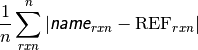
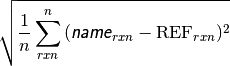
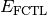
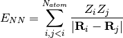
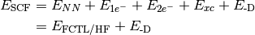
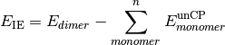

PSI Variables by Alpha¶
Note
Lowercase letters in PSI variable names represent portions of the variable name that vary by root number, calculation order, etc. See text for fuller description.
- (T) CORRECTION ENERGY¶
The coupled-cluster perturbative triples correction [H].
- A-(T) CORRECTION ENERGY¶
The coupled-cluster asymmetric perturbative triples correction [H].
- MP4(T) CORRECTION ENERGY¶
The MP4 triples component [H]. Quantity is second right-hand term in Eq. (2).
- AAA (T) CORRECTION ENERGY¶
- AAB (T) CORRECTION ENERGY¶
- ABB (T) CORRECTION ENERGY¶
- BBB (T) CORRECTION ENERGY¶
Spin components of the UHF-based coupled-cluster perturbative triples correction [H].
- ACPF DIPOLE X¶
- ACPF DIPOLE Y¶
- ACPF DIPOLE Z¶
The three components of the dipole [Debye] for the averaged coupled-pair functional level of theory.
- ACPF QUADRUPOLE XX¶
- ACPF QUADRUPOLE XY¶
- ACPF QUADRUPOLE XZ¶
- ACPF QUADRUPOLE YY¶
- ACPF QUADRUPOLE YZ¶
- ACPF QUADRUPOLE ZZ¶
The six components of the quadrupole [Debye Ang] for the averaged coupled-pair functional level of theory.
- ACPF TOTAL ENERGY¶
- ACPF CORRELATION ENERGY¶
The total electronic energy [H] and correlation energy component [H] for the averaged coupled-pair functional level of theory.
- AQCC DIPOLE X¶
- AQCC DIPOLE Y¶
- AQCC DIPOLE Z¶
The three components of the dipole [Debye] for the averaged quadratic coupled-cluster level of theory.
- AQCC QUADRUPOLE XX¶
- AQCC QUADRUPOLE XY¶
- AQCC QUADRUPOLE XZ¶
- AQCC QUADRUPOLE YY¶
- AQCC QUADRUPOLE YZ¶
- AQCC QUADRUPOLE ZZ¶
The six components of the quadrupole [Debye Ang] for the averaged quadratic coupled-cluster level of theory.
- AQCC TOTAL ENERGY¶
- AQCC CORRELATION ENERGY¶
The total electronic energy [H] and correlation energy component [H] for the averaged quadratic coupled-cluster level of theory.
- BRUECKNER CONVERGED¶
Value 1 (0) when the Brueckner orbitals have (have not) converged.
- CBS TOTAL ENERGY¶
- CBS CORRELATION ENERGY¶
- CBS REFERENCE ENERGY¶
The total electronic energy [H] and its breakdown into reference total energy [H] and correlation correction components [H] for the compound method requested through cbs().
- CC ROOT n TOTAL ENERGY¶
The total electronic energy [H] for the requested coupled cluster level of theory and root n (numbering starts at GS = 0).
- CC2 TOTAL ENERGY¶
- CC2 CORRELATION ENERGY¶
- CC3 TOTAL ENERGY¶
- CC3 CORRELATION ENERGY¶
- CC4 TOTAL ENERGY¶
- CC4 CORRELATION ENERGY¶
- CCnn TOTAL ENERGY¶
- CCnn CORRELATION ENERGY¶
The total electronic energy [H] and correlation energy component [H] for the requested approximate coupled-cluster (CC2, CC3, up to CCnn) level of theory.
- CC DIPOLE X¶
- CC DIPOLE Y¶
- CC DIPOLE Z¶
The three components of the dipole [Debye] for the requested coupled cluster level of theory and root.
- CC QUADRUPOLE XX¶
- CC QUADRUPOLE XY¶
- CC QUADRUPOLE XZ¶
- CC QUADRUPOLE YY¶
- CC QUADRUPOLE YZ¶
- CC QUADRUPOLE ZZ¶
The six components of the quadrupole [Debye Ang] for the requested coupled cluster level of theory and root.
- CCSD TOTAL ENERGY¶
- CCSD CORRELATION ENERGY¶
- CCSDT TOTAL ENERGY¶
- CCSDT CORRELATION ENERGY¶
- CCSDTQ TOTAL ENERGY¶
- CCSDTQ CORRELATION ENERGY¶
- CCn TOTAL ENERGY¶
- CCn CORRELATION ENERGY¶
The total electronic energy [H] and correlation energy component [H] for the requested full coupled-cluster (CCSD, CCSDT, up to CCn) level of theory.
- CCSD(T) TOTAL ENERGY¶
- CCSD(T) CORRELATION ENERGY¶
- A-CCSD(T) TOTAL ENERGY¶
- A-CCSD(T) CORRELATION ENERGY¶
- CCSDT(Q) TOTAL ENERGY¶
- CCSDT(Q) CORRELATION ENERGY¶
- CC(n-1)(n) TOTAL ENERGY¶
- CC(n-1)(n) CORRELATION ENERGY¶
The total electronic energy [H] and correlation energy component [H] for the perturbatively corrected coupled-cluster (CCSD(T), a-CCSD(T), CCSDT(Q), up to CC(n-1)(n) level of theory.
- CCSDT-1a TOTAL ENERGY¶
- CCSDT-1a CORRELATION ENERGY¶
- CCSDTQ-1a TOTAL ENERGY¶
- CCSDTQ-1a CORRELATION ENERGY¶
- CCn-1a TOTAL ENERGY¶
- CCn-1a CORRELATION ENERGY¶
The total electronic energy [H] and correlation energy component [H] for the approximate coupled-cluster (CCSD(T)-1a, CCSDT(Q)-1a, up to CCn-1a) level of theory.
- CCSDT-1b TOTAL ENERGY¶
- CCSDT-1b CORRELATION ENERGY¶
- CCSDTQ-1b TOTAL ENERGY¶
- CCSDTQ-1b CORRELATION ENERGY¶
- CCn-1b TOTAL ENERGY¶
- CCn-1b CORRELATION ENERGY¶
The total electronic energy [H] and correlation energy component [H] for the approximate coupled-cluster (CCSD(T)-1b, CCSDT(Q)-1b, up to CCn-1b) level of theory.
- CCSDT-3 TOTAL ENERGY¶
- CCSDT-3 CORRELATION ENERGY¶
- CCSDTQ-3 TOTAL ENERGY¶
- CCSDTQ-3 CORRELATION ENERGY¶
- CCn-3 TOTAL ENERGY¶
- CCn-3 CORRELATION ENERGY¶
The total electronic energy [H] and correlation energy component [H] for the approximate coupled-cluster (CCSD(T)-3, CCSDT(Q)-3, up to CCn-3) level of theory.
- CCSD(T)_L TOTAL ENERGY¶
- CCSD(T)_L CORRELATION ENERGY¶
- CCSDT(Q)_L TOTAL ENERGY¶
- CCSDT(Q)_L CORRELATION ENERGY¶
- CC(n-1)(n)_L TOTAL ENERGY¶
- CC(n-1)(n)_L CORRELATION ENERGY¶
The total electronic energy [H] and correlation energy component [H] for the approximate coupled-cluster (CCSD(T)_L, CCSDT(Q)_L, up to CC(n-1)(n)L level of theory.
- CEPA(0) DIPOLE X¶
- CEPA(0) DIPOLE Y¶
- CEPA(0) DIPOLE Z¶
The three components of the dipole [Debye] for the coupled electron pair approximation variant 0 level of theory.
- CEPA(0) QUADRUPOLE XX¶
- CEPA(0) QUADRUPOLE XY¶
- CEPA(0) QUADRUPOLE XZ¶
- CEPA(0) QUADRUPOLE YY¶
- CEPA(0) QUADRUPOLE YZ¶
- CEPA(0) QUADRUPOLE ZZ¶
The six components of the quadrupole [Debye Ang] for the coupled electron pair approximation variant 0 level of theory.
- CEPA(0) TOTAL ENERGY¶
- CEPA(0) CORRELATION ENERGY¶
- CEPA(1) TOTAL ENERGY¶
- CEPA(1) CORRELATION ENERGY¶
- CEPA(2) TOTAL ENERGY¶
- CEPA(2) CORRELATION ENERGY¶
- CEPA(3) TOTAL ENERGY¶
- CEPA(3) CORRELATION ENERGY¶
The total electronic energy [H] and correlation energy component [H] for the requested variant of coupled electron pair approximation level of theory.
- CI DIPOLE X¶
- CI DIPOLE Y¶
- CI DIPOLE Z¶
The three components of the dipole [Debye] for the requested configuration interaction level of theory and root.
- CI QUADRUPOLE XX¶
- CI QUADRUPOLE XY¶
- CI QUADRUPOLE XZ¶
- CI QUADRUPOLE YY¶
- CI QUADRUPOLE YZ¶
- CI QUADRUPOLE ZZ¶
The six components of the quadrupole [Debye Ang] for the requested configuration interaction level of theory and root.
- CI ROOT n -> ROOT m DIPOLE X¶
- CI ROOT n -> ROOT m DIPOLE Y¶
- CI ROOT n -> ROOT m DIPOLE Z¶
The three components of the transition dipole [Debye] between roots n and m for the requested configuration interaction level of theory.
- CI ROOT n -> ROOT m QUADRUPOLE XX¶
- CI ROOT n -> ROOT m QUADRUPOLE XY¶
- CI ROOT n -> ROOT m QUADRUPOLE XZ¶
- CI ROOT n -> ROOT m QUADRUPOLE YY¶
- CI ROOT n -> ROOT m QUADRUPOLE YZ¶
- CI ROOT n -> ROOT m QUADRUPOLE ZZ¶
The three components of the transition quadrupole [Debye Ang] between roots n and m for the requested configuration interaction level of theory.
- CI ROOT n DIPOLE X¶
- CI ROOT n DIPOLE Y¶
- CI ROOT n DIPOLE Z¶
The three components of the dipole [Debye] for the requested configuration interaction level of theory and root n.
- CI ROOT n QUADRUPOLE XX¶
- CI ROOT n QUADRUPOLE XY¶
- CI ROOT n QUADRUPOLE XZ¶
- CI ROOT n QUADRUPOLE YY¶
- CI ROOT n QUADRUPOLE YZ¶
- CI ROOT n QUADRUPOLE ZZ¶
The six components of the quadrupole [Debye Ang] for the requested configuration interaction level of theory and root n.
- CI ROOT n TOTAL ENERGY¶
- CI ROOT n CORRELATION ENERGY¶
The total electronic energy [H] and correlation energy component [H] for the requested configuration interaction level of theory and root n (numbering starts at 1).
- CI STATE-AVERAGED TOTAL ENERGY¶
- CI STATE-AVERAGED CORRELATION ENERGY¶
The total electronic energy [H] and correlation energy component [H] for state-averaged CI/CASSCF levels of theory.
- CI TOTAL ENERGY¶
- CI CORRELATION ENERGY¶
The total electronic energy [H] and correlation energy component [H] for the requested configuration interaction level of theory and root.
- CISD DIPOLE X¶
- CISD DIPOLE Y¶
- CISD DIPOLE Z¶
The three components of the dipole [Debye] for the configuration interaction singles and doubles level of theory and root.
- CISD QUADRUPOLE XX¶
- CISD QUADRUPOLE XY¶
- CISD QUADRUPOLE XZ¶
- CISD QUADRUPOLE YY¶
- CISD QUADRUPOLE YZ¶
- CISD QUADRUPOLE ZZ¶
The six components of the quadrupole [Debye Ang] for the configuration interaction singles and doubles level of theory and root.
- CISD TOTAL ENERGY¶
- CISD CORRELATION ENERGY¶
- CISDT TOTAL ENERGY¶
- CISDT CORRELATION ENERGY¶
- CISDTQ CORRELATION ENERGY¶
- CISDTQ TOTAL ENERGY¶
- CIn CORRELATION ENERGY¶
- CIn TOTAL ENERGY¶
The total electronic energy [H] and correlation energy component [H] for the labeled configuration interaction level of theory and root. n is CI order for n > 4.
- CP-CORRECTED 2-BODY INTERACTION ENERGY¶
The interaction energy [H] considering only two-body interactions, computed with counterpoise correction. Related variable UNCP-CORRECTED 2-BODY INTERACTION ENERGY.

- CURRENT CORRELATION ENERGY¶
The correlation energy [H] corresponding to the CURRENT ENERGY variable.
- CURRENT ENERGY¶
The total electronic energy [H] of the most recent stage of a calculation (frequently overwritten). This is the quantity tracked by the geometry optimizer.
- CURRENT REFERENCE ENERGY¶
The total electronic energy [H] of the reference stage corresponding to the CURRENT ENERGY variable.
- db_name DATABASE MEAN ABSOLUTE DEVIATION¶
The mean absolute deviation [kcal mol-1] of the requested method name from the stored reference values for the requested reactions in database db_name. If no reference is available, this will be a large and nonsensical value.

- db_name DATABASE MEAN SIGNED DEVIATION¶
The mean deviation [kcal mol-1] of the requested method name from the stored reference values for the requested reactions in database db_name. If no reference is available, this will be a large and nonsensical value.

- db_name DATABASE ROOT-MEAN-SQUARE SIGNED DEVIATION¶
The rms deviation [kcal mol-1] of the requested method name from the stored reference values for the requested reactions in database db_name. If no reference is available, this will be a large and nonsensical value.

- DFT FUNCTIONAL TOTAL ENERGY¶
The total electronic energy [H] for the underlying functional of the requested DFT method, without any dispersion correction; the first four terms in Eq. (4) or (1). Quantity  in Eqs. (4) and (1). Unless the method includes a dispersion correction, this quantity is equal to SCF TOTAL ENERGY.
- DFT TOTAL ENERGY¶
The total electronic energy [H] for the requested DFT method,
 in Eq. (1).
in Eq. (1).(1)

Unless the method is a DFT double-hybrid, this quantity is equal to SCF TOTAL ENERGY. If the method is neither a double-hybrid, nor dispersion corrected, this quantity is equal to DFT FUNCTIONAL TOTAL ENERGY.
- DFT XC ENERGY¶
The functional energy contribution [H] to the total SCF energy (DFT only). Quantity
 in Eqs. (4) and (1).
in Eqs. (4) and (1).
- DISPERSION CORRECTION ENERGY¶
The dispersion correction [H] appended to an underlying functional when a DFT-D method is requested. Quantity
 in Eqs. (4) and (1).
in Eqs. (4) and (1).
- DOUBLE-HYBRID CORRECTION ENERGY¶
The scaled MP2 correlation energy correction [H] appended to an underlying functional when a DH-DFT method is requested. Quantity
 in Eq. (1).
in Eq. (1).
- FCI TOTAL ENERGY¶
- FCI CORRELATION ENERGY¶
The total electronic energy [H] and correlation energy component [H] for the full configuration interaction level of theory.
- HF TOTAL ENERGY¶
The total electronic energy [H] for the Hartree–Fock method, without any dispersion correction; the first three (or four, since
 ) terms in Eq. (4). Quantity
) terms in Eq. (4). Quantity  in Eq. (4).
in Eq. (4).
- LCC2 (+LMP2) TOTAL ENERGY¶
The total electronic energy [H] for the local CC2 level of theory.
- LCCSD (+LMP2) TOTAL ENERGY¶
The total electronic energy [H] for the local CCSD level of theory.
- MP2 TOTAL ENERGY¶
- MP2 CORRELATION ENERGY¶
The total electronic energy [H] and correlation energy component [H] for the MP2 level of theory.
- MP2.5 TOTAL ENERGY¶
- MP2.5 CORRELATION ENERGY¶
The total electronic energy [H] and correlation energy component [H] for the MP2.5 level of theory.
- MP3 TOTAL ENERGY¶
- MP3 CORRELATION ENERGY¶
The total electronic energy [H] and correlation energy component [H] for the MP3 level of theory.
- MP4(SDQ) TOTAL ENERGY¶
- MP4(SDQ) CORRELATION ENERGY¶
The total electronic energy [H] and correlation energy component [H] for the MP4 singles, doubles, quadruples level of theory. Quantity MP4(SDQ) CORRELATION ENERGY is first right-hand term in Eq. (2).
- MP4 TOTAL ENERGY¶
- MP4 CORRELATION ENERGY¶
- MP4(SDTQ) TOTAL ENERGY¶
- MP4(SDTQ) CORRELATION ENERGY¶
The total electronic energy [H] and correlation energy component [H] for the full MP4 level of theory. Quantity MP4 CORRELATION ENERGY / MP4(SDTQ) CORRELATION ENERGY is left-hand term in Eq. (2).
(2)

- MPn TOTAL ENERGY¶
- MPn CORRELATION ENERGY¶
The total electronic energy [H] and correlation energy component [H] for the labeled Möller–Plesset perturbation theory level. n is MP perturbation order.
- NUCLEAR REPULSION ENERGY¶
The nuclear repulsion energy contribution [H] to the total SCF energy. Quantity
 in Eq. (4).
in Eq. (4).(3)
- OCEPA(0) TOTAL ENERGY¶
- OCEPA(0) CORRELATION ENERGY¶
The total electronic energy [H] and correlation energy component [H] for the orbital-optimized CEPA(0) level of theory.
- OMP2 TOTAL ENERGY¶
- OMP2 CORRELATION ENERGY¶
The total electronic energy [H] and correlation energy component [H] for the orbital-optimized MP2 level of theory.
- OMP3 TOTAL ENERGY¶
- OMP3 CORRELATION ENERGY¶
The total electronic energy [H] and correlation energy component [H] for the orbital-optimized MP3 level of theory.
- ONE-ELECTRON ENERGY¶
The one-electron energy contribution [H] to the total SCF energy. Quantity
 in Eq. (4).
in Eq. (4).
- QCISD TOTAL ENERGY¶
- QCISD CORRELATION ENERGY¶
The total electronic energy [H] and correlation energy component [H] for the quadratic configuration interaction singles and doubles level of theory.
- QCISD(T) TOTAL ENERGY¶
- QCISD(T) CORRELATION ENERGY¶
The total electronic energy [H] and correlation energy component [H] for the quadratic configuration interaction singles and doubles with perturbative triples correction level of theory.
- SAPT DISP ENERGY¶
- SAPT ELST ENERGY¶
- SAPT EXCH ENERGY¶
- SAPT IND ENERGY¶
Respectively, the dispersion, electrostatics, exchange, and induction components of the total electronic interaction energy [H] for the the requested SAPT level of theory. The sum of these four components yields SAPT ENERGY.
- SAPT ENERGY¶
The total electronic interaction energy [H] for the requested SAPT level of theory.
- SAPT SAPT0 ENERGY¶
- SAPT SAPT2 ENERGY¶
- SAPT SAPT2+ ENERGY¶
- SAPT SAPT2+(3) ENERGY¶
- SAPT SAPT2+3 ENERGY¶
The total electronic interaction energy [H] for the labeled SAPT level of theory.
- SAPT SAPT2+(CCD) ENERGY¶
- SAPT SAPT2+(3)(CCD) ENERGY¶
- SAPT SAPT2+3(CCD) ENERGY¶
The total electronic interaction energy [H] for the labeled SAPT level of theory that incorporates coupled-cluster dispersion.
- SCF QUADRUPOLE XX¶
- SCF QUADRUPOLE XY¶
- SCF QUADRUPOLE XZ¶
- SCF QUADRUPOLE YY¶
- SCF QUADRUPOLE YZ¶
- SCF QUADRUPOLE ZZ¶
The six components of the SCF quadrupole [Debye Ang].
- SCF TOTAL ENERGY¶
The total electronic energy [H] of the SCF stage of the calculation. The CORRELATION ENERGY variables from subsequent stages of a calculation are often the corresponding TOTAL ENERGY variables less this quantity. Constructed from Eq. (4), where this quantity is
 .
.(4)
Unless the method includes a dispersion correction, this quantity is equal to HF TOTAL ENERGY (for HF) or DFT FUNCTIONAL TOTAL ENERGY (for DFT). Unless the method is a DFT double-hybrid, this quantity is equal to DFT TOTAL ENERGY.
- TWO-ELECTRON ENERGY¶
The two-electron energy contribution [H] to the total SCF energy. Quantity
 in Eq. (4).
in Eq. (4).
- UNCP-CORRECTED 2-BODY INTERACTION ENERGY¶
The interaction energy [H] considering only two-body interactions, computed without counterpoise correction. Related variable CP-CORRECTED 2-BODY INTERACTION ENERGY.
